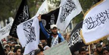

Русский
English
Azərbaycanca

The Thinking of Future
Beynəlxalq və regional münasibətlər
Bu gün beynəlxalq münasibətlər sistemində, eləcə də dünya mətbuatında ən aktual məsələ Proseslərin təhlili maraqlı məqamlardan xəbər verir.
Ermənistanda cari ilin mayın 6-da keçirilən parlament seçkilərində hakim partiya mandatların əksəriyyətini əldə edərək qələbə qazandı. Ancaq seçkilərdə saxtakarlıqla bağlı protokollar və video görüntüləri MSK-ya təqdim edilsə də, ...

Bu gün beynəlxalq münasibətlər sistemində, eləcə də dünya mətbuatında ən aktual məsələ Suriyada baş verən hadisələrdir. Suriya hadisələrinə baxış və onun təhlili, yanaşma nöqteyi-nəzərindən dəyişməkdədir. Proseslərin təhlili maraqlı məqamlardan xəbər verir.

Qərbdə Avropa İttifaqının hazırkı formada uzun müddət mövcudluğuna inam qalmayıb. Bunun səbəbi qurumun dərin böhran içində olmasıdır. Onun bir neçə variantda yeniləşməsi proqnozlaşdırılır. Bu məqsədlə müxtəlif inkişaf ssenariləri təklif edilir.
Beynəlxalq və regional münasibətlər
Bu gün beynəlxalq münasibətlər sistemində, eləcə də dünya mətbuatında ən aktual məsələ Suriyada baş verən hadisələrdir. Suriya hadisələrinə baxış və onun təhlili, yanaşma nöqteyi-nəzərindən dəyişməkdədir. Proseslərin təhlili maraqlı məqamlardan xəbər verir.
Bu gün beynəlxalq münasibətlər sistemində, eləcə də dünya mətbuatında ən aktual məsələ Suriyada baş verən hadisələrdir. Suriya hadisələrinə baxış və onun təhlili, yanaşma nöqteyi-nəzərindən dəyişməkdədir. Proseslərin təhlili maraqlı məqamlardan xəbər verir.

Suriya hadisələrinin pərdə arxası
Bu gün beynəlxalq münasibətlər sistemində, eləcə də dünya mətbuatında ən aktual məsələ Suriyada baş verən hadisələrdir. Suriya hadisələrinə baxış və onun təhlili, yanaşma nöqteyi-nəzərindən dəyişməkdədir. Proseslərin təhlili maraqlı məqamlardan xəbər verir.
Bu gün beynəlxalq münasibətlər sistemində, eləcə də dünya mətbuatında ən aktual məsələ Suriyada baş verən hadisələrdir. Suriya hadisələrinə baxış və onun təhlili, yanaşma nöqteyi-nəzərindən dəyişməkdədir. Proseslərin təhlili maraqlı məqamlardan xəbər verir.
Çox oxunanlar
“Novruz Məmmədov: “Azərbaycan regional lider və geosiyasi aktor kimi özünü tam təsdiq “Suriya-Türkiyə-İran “üçbucağı”nın gərginlikləri
Erməni terrorçularının hamiləri
“Ərəb baharı”: müharibələrin yaratdığı qorxunc mənzərə
“ABŞ – İmperiya, yoxsa superdövlət?!Dağlıq Qarabağ münaqişəsi: ikili standartların yaratdığı “zaman
seytnotu”
““Erməni məsələsi” – Qafqaz üçün böyük təhlükə
“Suriya-Türkiyə-İran “üçbucağı”nın gərginlikləri
Erməni terrorçularının hamiləri
“Ərəb baharı”: müharibələrin yaratdığı qorxunc mənzərə
“ABŞ – İmperiya, yoxsa superdövlət?!Dağlıq Qarabağ münaqişəsi: ikili standartların yaratdığı “zaman
seytnotu”
““Erməni məsələsi” – Qafqaz üçün böyük təhlükə